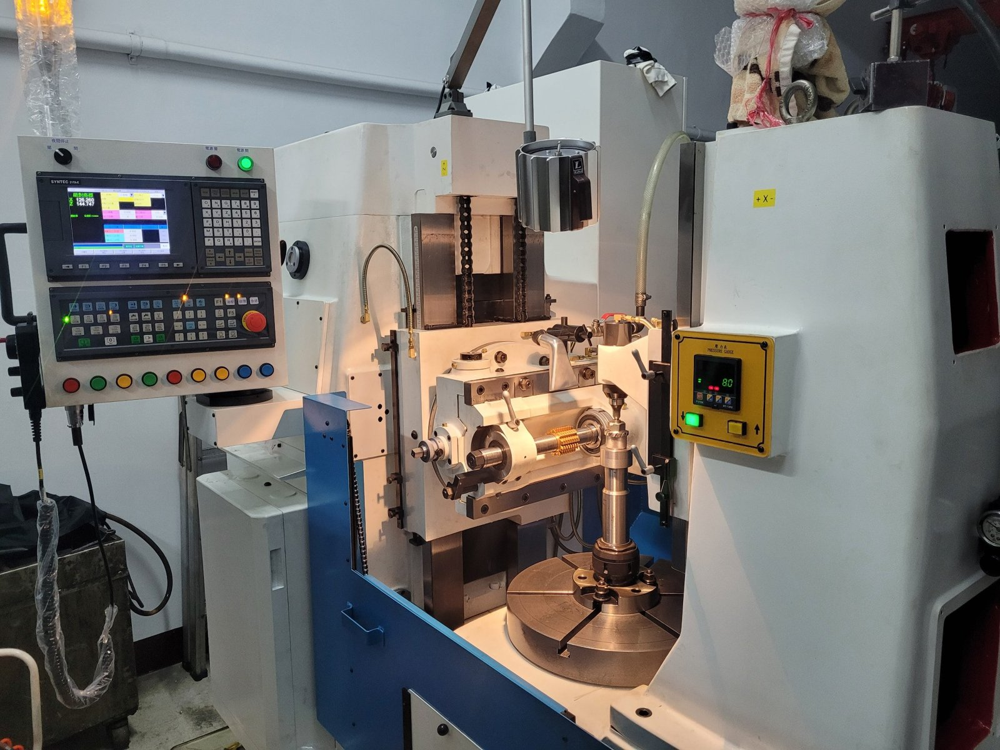
OUR PROJECTS / ENGINEERING SOLUTIONS
專案實績
以專業的齒輪加工技術與機械整合能力，
為客戶提供高品質、高效率的解決方案。
PORTFOLIO
工程技術與專案展示
顯示 33 個專案項目
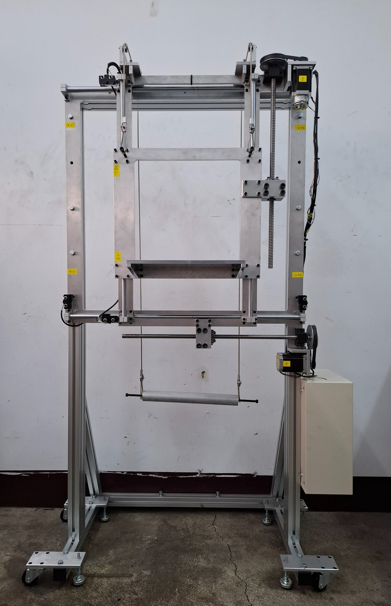


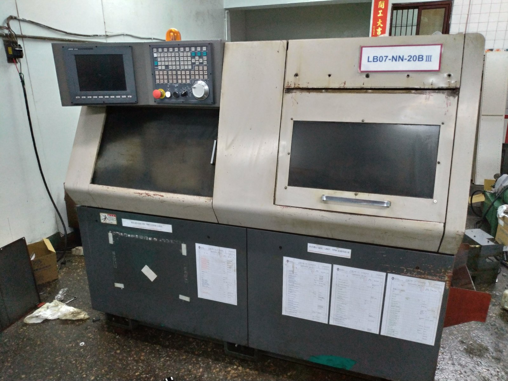


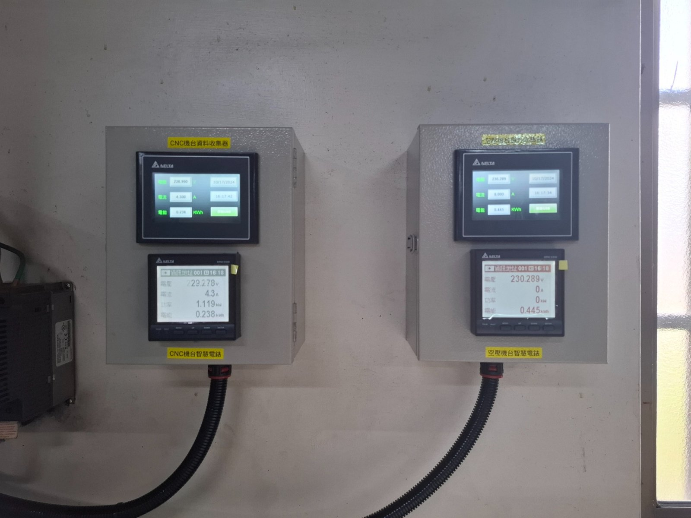
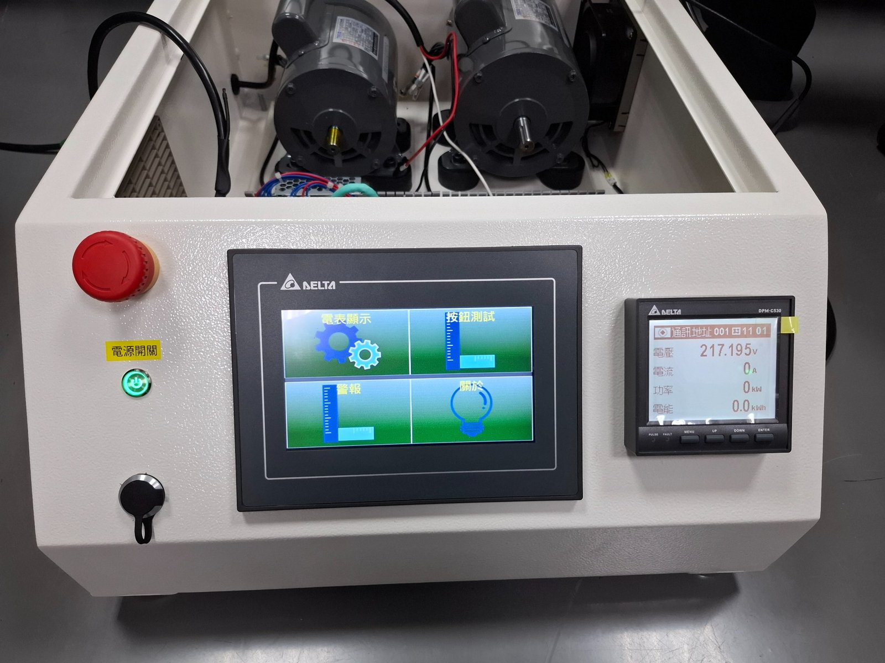
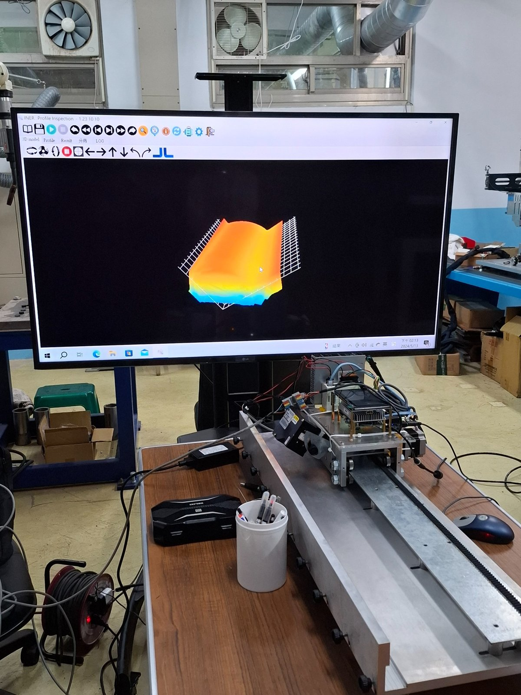
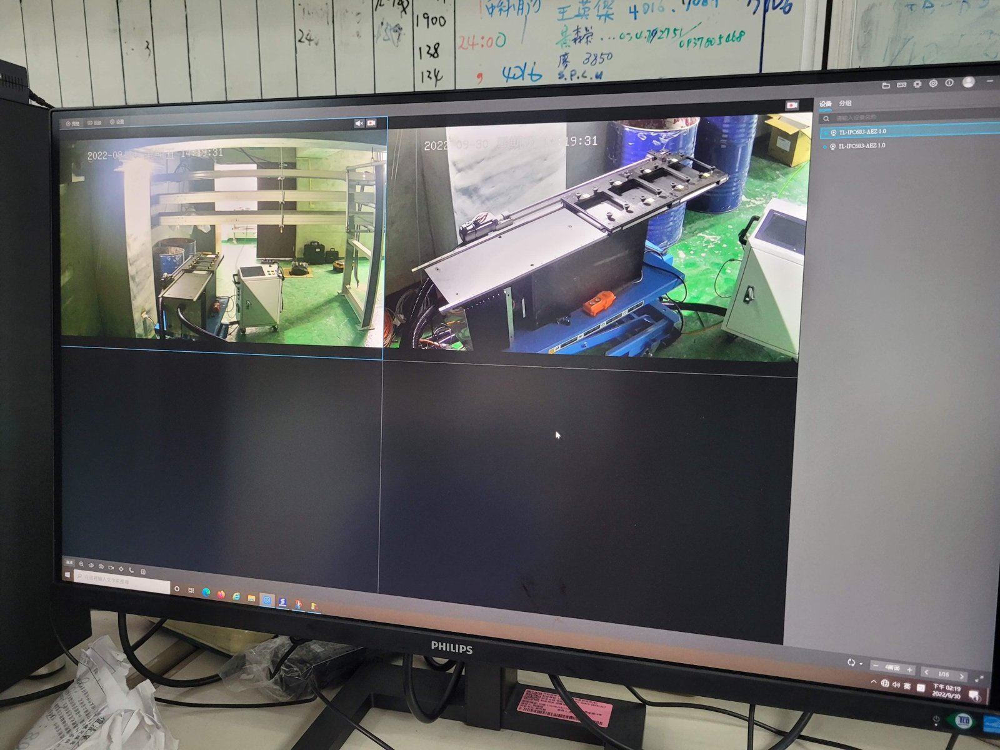
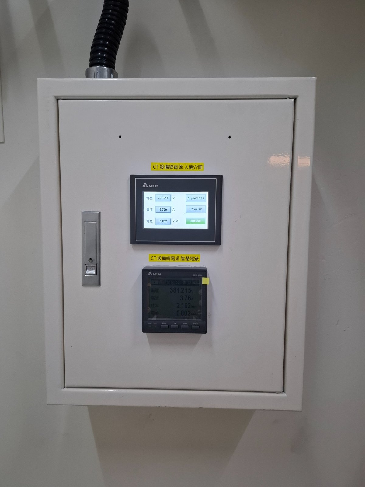


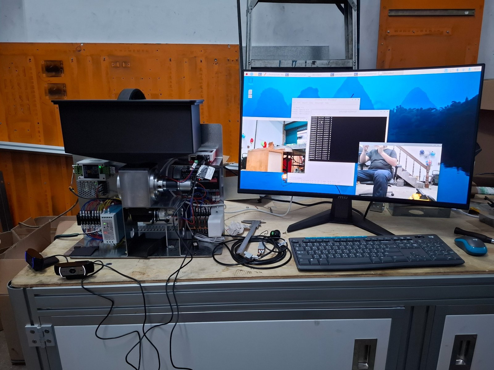

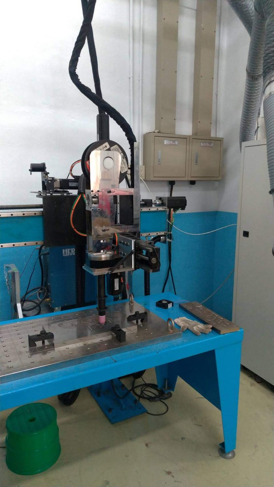


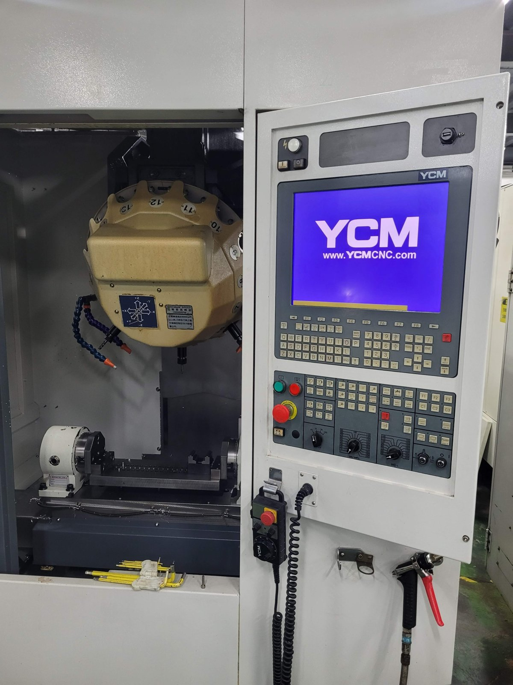
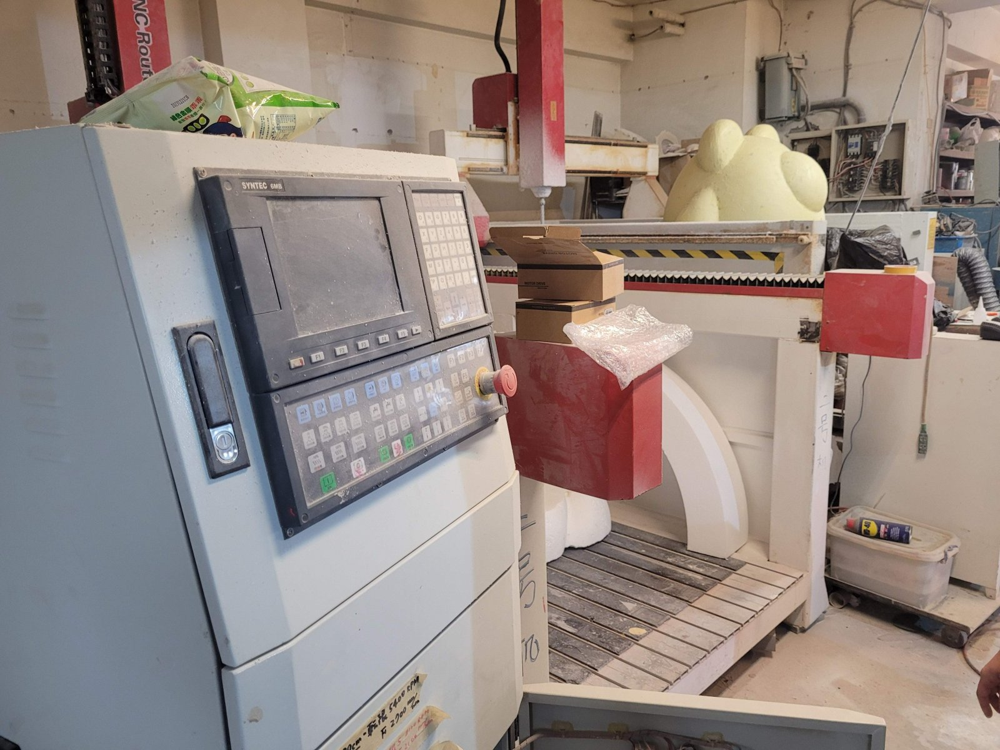
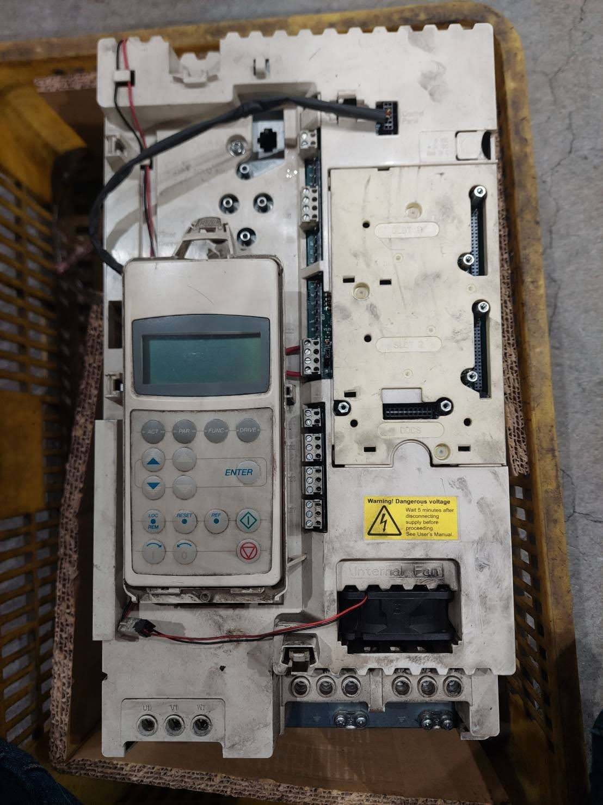
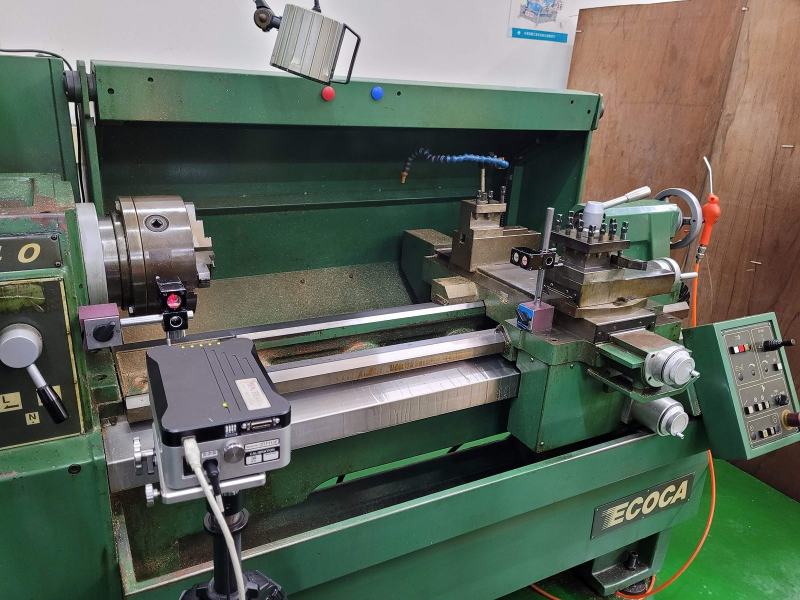


LET'S TALK ENGINEERING
有齒輪加工或設備開發需求？
歡迎提供圖面、規格或設備需求，與我們討論合適的解決方案。